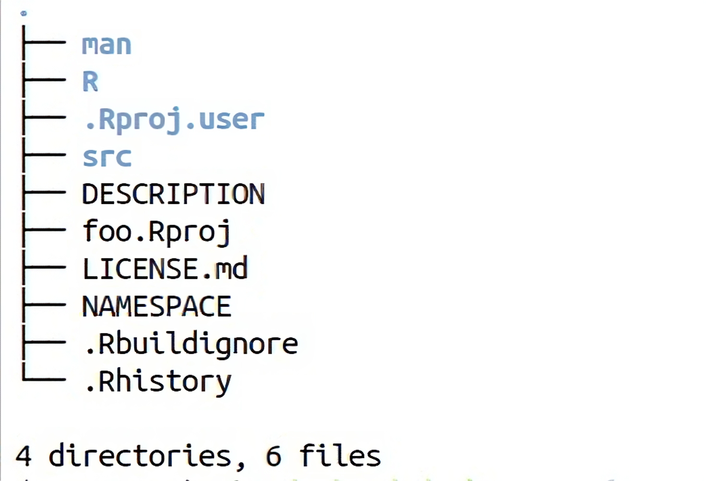

module AquaFortRmodule
use, intrinsic :: iso_c_binding
implicit none
contains
! place subroutines and functions
! ...
! ...
! ...
end module AquaFortRmodule3 Accelerate R Packages with Fortran
The chapter focuses on wrapping the routines developed in the previous chapter in the R package.
3.1 Introduction
A package in R is a bundle of R code, data, and documentation designed to perform a specific task or a set of tasks (Wickham & Bryan, 2023). Packages are the fundamental units of reproducible R code. Packaging has many benefits:
- It produces packages that are easily downloaded and used.
- It forces a tidy code and work process.
- It enables the re-usage of code from and for other projects.
- Files rapidly multiply when using foreign languages such as C, C++, or Fortran; thus, packaging makes it easier to maintain and manage dependencies and ports.
Many tools are available to facilitate developing R packages, such as devtools, usethis, and testthat. Additionally, RStudio operates as an invaluable companion. To start the development of an R package within RStudio, navigate to File > New Project > New Directory > R Package, and then proceed to create the project. Alternatively, you can use the devtools::create("/path/to/package/location/") or usethis::create_package("/path/to/package/location/") functions.
By employing usethis::use_c(), you can easily incorporate the necessary infrastructure to utilise compiled code. It’s vital to ensure that your package is properly licensed. Various license templates are available through usethis, including the Creative Commons (e.g., CC BY 4.0), which can be implemented via usethis::use_ccby_license().

Figure 3.1 shows a skeleton of a typical R package called foo. R code is placed in the R/ directory, while the compiled code resides in the src/ directory. R provides a standardised method of documenting packages. The DESCRIPTION is generated with the package template and contains essential documentation, including the package’s title, what the package does, the author, and dependencies. Additionally, the SystemRequirements is important in case the package depends on libraries or tools external to R, e.g., FFTW or GNU make.
The R documentation files .Rd are stored within the man/ folder. When employing devtools for package development, the .Rd files are automatically modified when the specially formatted “roxgen comments” above R source codes are modified (Wickham & Bryan, 2023). Thus, it is important to run devtools::document() whenever a function is completed. The NAMESPACE file is a fundamental component of a package. It delivers a context for looking up the value of an object associated with a name (Wickham & Bryan, 2023). Typically, it is modified automatically by roygen2 and contains routines such as export to make the package functions visible, import to import all objects from another package’s namespace or importForm to import selected objects, and useDynLib() for packages with compiled code to register routines from DLL.
The second edition of the R Packages book by Hadley Wickham and Jennifer Bryan, particularly the chapter “The Whole Game”, offers essential insights and presents a comprehensive overview of creating an R package.
3.2 Developing AquaFortR
In this section, we will wrap the routines developed in Chapter 2 within an R package. For simplicity, we will focus on implementing 2D cross-correlation here. In the package ecosystem, it is advantageous to avoid the .Fortran interface. The interface is mainly tailored for Fortran 77, predates any support for ‘modern’ Fortran, and carries a significant overhead. Therefore, we will use .Call the modern interface to C/C++.
The development consists mainly of three stages:
- Writing the Fortran subroutine
- Crafting C functions to interact between R and Fortran
- And finally, creating an R function to call the C function.
3.2.1 Fortran Subroutine
The best approach to organising Fortran code with an R package is to use modules, storing each module in individual files. The intrinsic module iso_c_binding ensures that precisely the same variable type and kind is used in C and Fortran.
Listing 3.1 shows the structure of the Fortran file AquaFortRmodulef.f90. Fortran files can multiply rapidly, and thus, managing module dependencies can be a tedious task. Numbering the files and writing the routines sequentially, such as AquaFortRmodulesf001.f90 to AquaFortRmodulesf00n.f90, can serve as a practical workaround.
Listing 3.2 shows the subroutine xcorr2d_f. The differences in comparison to the script version in Listing 2.2 are:
- The kind of the variable is defined according to
iso_c_binding. Integers are of thec_intkind, while double precision variables are defined as real with thec_doublekind. - Typically, variables are passed to Fortran (C) by reference (value). The
valueattribute allows passing by value to Fortran. - Using
bind()facilitates the interoperability of Fortran procedures with C. The binding label is the name by which the C processer recognises the Fortran procedure. TheF77_prefixes in C add a trailing underscore.
subroutine xcorr2d_f(m, n, p, q, k, l, a, b, cc) bind(C, name="xcorr2d_f_")
implicit none
integer(kind=c_int), intent(in), value :: m, n, p, q, k, l
real(kind=c_double), intent(in), dimension(m, n) :: a
real(kind=c_double), intent(in), dimension(p, q) :: b
real(kind=c_double), intent(out), dimension(k, l) :: cc
! dummy vars
integer(kind=c_int) :: min_row_shift, min_col_shift
integer(kind=c_int) :: max_row_shift, max_col_shift
integer(kind=c_int) :: rows_padded, cols_padded
integer(kind=c_int) :: icol, irow, icc, icol2, irow2
real(kind=c_double), allocatable, dimension(:, :) :: padded_a, padded_b
! The rest of the subroutine is similar to Listing 2.2
! or it can be found in src/AquaFortRmodulef.f90
end subroutine xcorr2d_f3.2.2 C Functions
Now, we write C functions that communicate between Fortran and R. The R API has many entry points for the C code. To use the public stable API, the header files in Listing 3.3 should be included in the AquaFortRmodulec.c. Additionally, stdlib.h is included for NULL. It is recommended to use R_NO_REMAP so all API functions have the prefix R_ or Rf_.
#define R_NO_REMAP
#include <R.h>
#include <Rinternals.h> // Access to "public" internal API
#include <stdlib.h> // for NULLF77_NAME() is used to declare the Fortran subroutine in C. Note that variables with value attribute should not be pointers, as shown in Listing 3.4.
void F77_NAME(xcorr2d_f)(int m, int n, int p, int q, int k, int l,
double *a, double *b, double *cc);In Listing 3.5, the c_xcorr2d_f function communicates between R and C, and invoke the declared Fortran subroutine in C. Everything that moves between R and C should be SEXP. Additional variables required by the Fortran subroutine, such as matrix dimensions, are created within the C code. The F77_CALL() macro is to call the Fortran routine, declared by F77_NAME(), from C. The PROTECT and UNPROTECT macros are required to save the result, i.e., ret, from being destroyed during R’s garbage collection. Variables of type double need to be altered to real before being passed to Fortran.
extern SEXP c_xcorr2d_f(SEXP a, SEXP b)
{
int m = Rf_nrows(a);
int n = Rf_ncols(a);
//
int p = Rf_nrows(b);
int q = Rf_ncols(b);
//
int k = m + p - 1;
int l = n + q - 1;
SEXP ret;
PROTECT(ret = Rf_allocMatrix(REALSXP, k, l));
F77_CALL(xcorr2d_f)
(m, n, p, q, k, l, REAL(a), REAL(b), REAL(ret));
UNPROTECT(1);
return (ret);
}Registration of native routines for compiled code is achieved in two stages: first, creating an array describing individual routines using R_CallMethodDef; then, actually registering the routines with R using R_registerRoutines, as shown in Listing 3.6. Registration’s benefits include a faster way to find the address of the entry point and a run-time check concerning the number and type of arguments. The R_useDynamicSymbols routine instructs the .Call function to find only registered routines, even when no package is provided, preventing unnecessary delay due to searching.
For further information, please refer to Writing R Extension: 5.4 Registering native routines.
static const R_CallMethodDef CallEntries[] = {
{"c_xcorr2d_f", (DL_FUNC)&c_xcorr2d_f, 2},
{"c_conv2d_f", (DL_FUNC)&c_conv2d_f, 2},
{"c_cape_f", (DL_FUNC)&c_cape_f, 7},
{NULL, NULL, 0}};
void R_init_AquaFortR(DllInfo *dll)
{
R_registerRoutines(dll, NULL, CallEntries, NULL, NULL);
R_useDynamicSymbols(dll, FALSE);
}
Important
All the C code in Section 3.2.2 is stored within the AquaFortRmodulec.c file.
3.2.3 R Function
After finishing the Fortran subroutine and C functions, we can write the R function, as shown in Listing 3.7. The first few lines contain the roxgen2 documentation for the function. We use the .Call function to invoke the C function c_xcorr2d_f that will invoke a Fortran subroutine xcorr2d_f.
#' @title 2D cross-correlation using Fortran.
#'
#' @description Calculates the 2D cross-correlation
#' of two matrices `a` and `b` using compiled Fortran subroutine.
#'
#' @param a A matrix (2D array) of values.
#' @param b A matrix (2D array) of values.
#' @return A matrix representing the 2D cross-correlation of
#' the input matrices.
#' @export
#' @examples
#' a <- matrix(c(1, 2, 3, 4), ncol = 2)
#' b <- matrix(c(5, 6, 7, 8), ncol = 2)
#' xcorr2D_f(a, b)
#' @author Ahmed Homoudi
#' @export
xcorr2D_f <- function(a, b) {
stopifnot(length(dim(a)) == 2 | length(dim(b)) == 2)
result <- .Call(
c_xcorr2d_f,
a,
b
)
return(result)
}It is crucial to add the following line to the package-level documentation (i.e.AquaFortR-package.R file) to load the DLL and define them in the package’s namespace.
Code
#' @useDynLib AquaFortR, .registration=TRUEThis is the end of the general workflow for developing an R package with Fortran code using the .Call interface. In the src/ directory, Fortran modules reside in .f90 files, while C routines are found in .c files. Some packages store their C code in an init.c file. All R code should be kept in the R/ directory.
3.2.4 System Dependencies
Occasionally, you develop a package that needs system-dependent configuration or libraries before installation, such as FFTW. An executable is then executed by R CMD INSTALL before any other action is performed to ensure the successful installation of the package. R allows /configure scripts to check for these dependencies. The /configure script can be written manually or using Autoconf.
Aaron Jacobs wrote about “An Autoconf Primer for R Package Authors.” It is a vital tutorial on developing a /configure script for an R package. Furthermore, detailed information concerning configuration and cleanup is available in Writing R extensions, 1.2 Configure-and-cleanup.
In case the configure script requires auxiliary files, it is advised that they should be shipped with the R package in the tools directory. Numerous macros are available at the GNU Autoconf Archive.